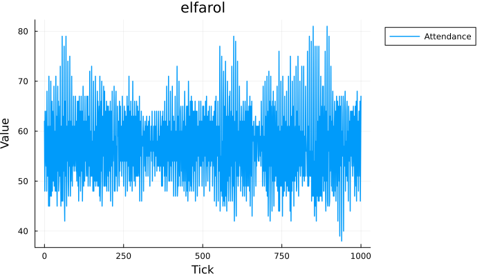
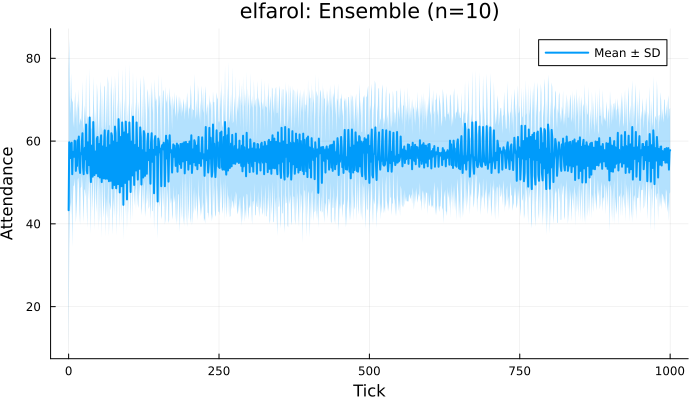
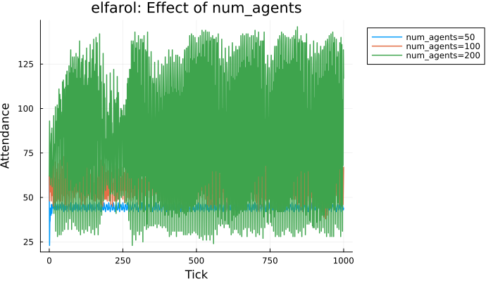

El Farol
Overview
WHAT IS IT?
El Farol is a bar in Santa Fe, New Mexico. The bar is popular — especially on Thursday nights when they offer Irish music — but sometimes becomes overcrowded and unpleasant. In fact, if the patrons of the bar think it will be overcrowded they stay home; otherwise they go enjoy themselves at El Farol. This model explores what happens to the overall attendance at the bar on these popular Thursday evenings, as the patrons use different strategies for determining how crowded they think the bar will be.
El Farol was originally put forth by Brian Arthur (1994) as an example of how one might model economic systems of boundedly rational agents who use inductive reasoning.
This is a version of the El Farol model in the Social Science Section of the NetLogo Models Library. This version is intended for use with the IABM textbook. It is NOT intended for textbook users to understand all the code in this model as the point in this section of the textbook is to extend the model by adding new output measures to the model, and not to alter the fundamental algorithm of the model.
HOW IT WORKS
An agent will go to the bar on Thursday night if they think that there will not be more than a certain number of people there — a number given by the OVERCROWDING-THRESHOLD. To predict the attendance for any given week, each agent has access to a set of prediction strategies and the actual attendance figures of the bar from previous Thursdays. A prediction strategy is represented as a list of weights that determines how the agent believes that each time period of the historical data affects the attendance prediction for the current week. One of these weights (the first one) is a constant term which allows the baseline of the prediction to be modified. This definition of a strategy is based on an implementation of Arthur’s model as revised by David Fogel et al. (1999). The agent decides which one of its strategies to use by determining which one would have done the best had they used it in the preceding weeks.
Interestingly, the optimal strategy from a perfectly rational point-of-view would be to always go to the bar since you are not punished for going when it is crowded, but in Arthur’s model agents are not optimizing attending when not crowded, instead they are optimizing their prediction of the attendance.
The number of potential strategies an agent has is given by NUMBER-STRATEGIES, and these potential strategies are distributed randomly to the agents during SETUP. As the model runs, at any one tick each agent will only utilize one strategy, based on its previous ability to predict the attendance at the bar. In this version of the El Farol model, agents are given strategies and do not change them once they have them, however since they can change their strategies at any time based on performance, the ecology of strategies being used by the whole population changes over time. The length of the attendance history the agents can use for a prediction or evaluation of a strategy is given by MEMORY-SIZE. This evaluation of performance is carried out in UPDATE-STRATEGIES, which does not change the strategies, but rather updates the performance of each strategy by testing it, and then selecting the strategy that has the best performance given the current data. In order to test each strategy its performance on MEMORY-SIZE past days is computed. To make this work, the model actually records twice the MEMORY-SIZE historical data so that a strategy can be tested MEMORY-SIZE days into the past still using the full MEMORY-SIZE data to make its prediction.
THINGS TO NOTICE
The green part of the world represents the homes of the patrons, while the blue part of the world represents the El Farol Bar. Over time the attendance will increase and decrease but its mean value comes close to the OVERCROWDING-THRESHOLD.
THINGS TO TRY
Try running the model with different settings for MEMORY-SIZE and NUMBER-STRATEGIES. What happens to the variability in attendance as you decrease NUMBER-STRATEGIES? What happens to the variability in the plot if you decrease MEMORY-SIZE?
EXTENDING THE MODEL
Currently the weights that determine each strategy are randomly generated during the model setup. Try altering the weights that are possible during setup so that they only reflect a mix of the following agent strategies:
- always predict the same as last week’s attendance
- an average of the last several week’s attendance
- the same as 2 weeks ago
Can you think of other simple rules one might follow?
At the end of Arthur’s original paper, he mentions that though he uses a simple learning technique (the “bag of strategies” method that we use here) almost any other kind of machine learning technique would achieve the same results. This method is particularly limiting in that the strategies an agent is given during the setup are all the strategies they have for the entire run of the model. Most other machine learning methods would enable the agents to change their strategies over time. In fact Fogel et al. (1999) implemented a genetic algorithm and got somewhat different results. Try implementing another machine learning technique and see what the results are.
Can you think of a better way to measure the success of strategies and calculate the best-strategy?
NETLOGO FEATURES
Lists are used to represent strategies and attendance histories.
n-values is useful for generating random strategies.
RELATED MODELS
Arthur’s original model has been generalized as the Minority Game and is included in the Social Sciences section of the NetLogo models library.
Wilensky, U. (2004). NetLogo Minority Game model. http://ccl.northwestern.edu/netlogo/models/MinorityGame. Center for Connected Learning and Computer-Based Modeling, Northwestern University, Evanston, IL.
There is also a participatory simulation version of the Minority Game model in the models library.
Stouffer, D. & Wilensky, U. (2004). NetLogo Minority Game HubNet model. http://ccl.northwestern.edu/netlogo/models/MinorityGameHubNet. Center for Connected Learning and Computer-Based Modeling, Northwestern University, Evanston, IL.
There is an alternative implementation of this model with more parameters that is part of the NetLogo User Community Models.
CREDITS AND REFERENCES
This model is adapted from:
Rand, W. and Wilensky, U. (1997). NetLogo El Farol model. http://ccl.northwestern.edu/netlogo/models/ElFarol. Center for Connected Learning and Computer-Based Modeling, Northwestern University, Evanston, IL.
This model is inspired by a paper by W. Brian Arthur. “Inductive Reasoning and Bounded Rationality”, W. Brian Arthur, The American Economic Review, 1994, v84n2, p406-411.
David Fogel et al. also built a version of this model using a genetic algorithm. “Inductive reasoning and bounded rationality reconsidered”, Fogel, D.B.; Chellapilla, K.; Angeline, P.J., IEEE Transactions on Evolutionary Computation, 1999, v3n2, p142-146.
HOW TO CITE
This model is part of the textbook, “Introduction to Agent-Based Modeling: Modeling Natural, Social and Engineered Complex Systems with NetLogo.”
If you mention this model or the NetLogo software in a publication, we ask that you include the citations below.
For the model itself:
- Rand, W., Wilensky, U. (2007). NetLogo El Farol model. http://ccl.northwestern.edu/netlogo/models/ElFarol. Center for Connected Learning and Computer-Based Modeling, Northwestern Institute on Complex Systems, Northwestern University, Evanston, IL.
Please cite the NetLogo software as:
- Wilensky, U. (1999). NetLogo. http://ccl.northwestern.edu/netlogo/. Center for Connected Learning and Computer-Based Modeling, Northwestern University, Evanston, IL.
Please cite the textbook as:
- Wilensky, U. & Rand, W. (2015). Introduction to Agent-Based Modeling: Modeling Natural, Social and Engineered Complex Systems with NetLogo. Cambridge, MA. MIT Press.
COPYRIGHT AND LICENSE
Copyright 2007 Uri Wilensky.

This model is licensed under the Creative Commons Attribution-NonCommercial-ShareAlike 3.0 License. To view a copy of this license, visit https://creativecommons.org/licenses/by-nc-sa/3.0/ or send a letter to Creative Commons, 559 Nathan Abbott Way, Stanford, California 94305, USA.
NetLogo itself is free software for non-commercial use under the terms of the GNU General Public License (see full license information here).
To inquire about commercial licenses for either NetLogo or specific models from the models library, please contact netlogo-commercial-admin@ccl.northwestern.edu.
Parameters
| Parameter | Type | Default | Description |
|---|---|---|---|
num_agents | Int | 100 | num agents |
memory_size | Int | 5 | memory size |
number_strategies | Int | 10 | number strategies |
overcrowding_threshold | Int | 60 | overcrowding threshold |
max_ticks | Int | 1000 | max ticks |
Source Code
The Julia code to run this model:
using ArkModelZoo
_, trajectory = run_elfarol()Time Series

Ensemble Runs
Ten replicates with different random seeds, showing mean ± standard deviation.

Parameter Sensitivity
Varying num_agents.

Appendix: Source Code
This model is implemented in the Ark.jl Entity-Component-System (ECS) framework. The code is split into five files, each with a distinct role:
- Parameters: a mutable struct holding all configurable values.
- Components: lightweight data types attached to individual entities (agents).
- Resources: world-level shared state accessible to all systems.
- Systems: functions that operate on entities each tick, defining model behavior.
- Model: wiring that assembles the world, registers resources and systems, and provides the run entry point.
Parameters (parameters.jl)
The parameter struct uses @kwdef so that every field has a default value and can be overridden by keyword. These defaults match the original NetLogo model’s slider settings.
Base.@kwdef mutable struct ElFarolParams
num_agents::Int = 100
memory_size::Int = 5
number_strategies::Int = 10
overcrowding_threshold::Int = 60
max_ticks::Int = 1000
seed::Int = 42
endComponents (components.jl)
Components are lightweight data types attached to individual entities (agents). Mutable structs hold per-entity state, while empty tag structs act as markers for the ECS query system to efficiently filter entities.
# Each agent has a set of strategies and a decision for the current tick
mutable struct ElFarolStrategies
strategies::Vector{Vector{Float64}}
best_strategy::Vector{Float64}
end
mutable struct ElFarolDecision
attend::Bool
prediction::Float64
endResources (resources.jl)
Resources are world-level singletons shared across all systems, used for global state and aggregate statistics.
# Global attendance history (most recent first)
mutable struct ElFarolHistory
history::Vector{Int}
end
ElFarolHistory(n::Int) = ElFarolHistory(zeros(Int, n))
mutable struct ElFarolStats
attendance::Int
end
ElFarolStats() = ElFarolStats(0)Systems (systems.jl)
Systems contain the model logic and execute in a defined order each tick. Each system struct implements either initialize! (run once at setup) or update! (run every tick).
# --- Helpers ---
# NetLogo: 1.0 - random-float 2.0 → values in (-1.0, 1.0]
function _elfarol_random_strategy(rng, memory_size::Int)
return [1.0 - rand(rng) * 2.0 for _ in 1:(memory_size + 1)]
end
# NetLogo: 100 * first strategy + sum(map ... butfirst strategy subhistory)
function _elfarol_predict(strategy::Vector{Float64}, subhistory::AbstractVector{Int})
pred = 100.0 * strategy[1]
for i in eachindex(subhistory)
pred += strategy[i + 1] * subhistory[i]
end
return pred
end
# Evaluate all strategies against history, pick the one with lowest total error.
# NetLogo: if score <= best-score ⇒ ties broken by LAST strategy.
function _elfarol_update_best!(strats::ElFarolStrategies, history::Vector{Int}, memory_size::Int)
best_score = memory_size * 100.0 + 1.0
for s in strats.strategies
score = 0.0
for week in 1:memory_size
pred = _elfarol_predict(s, @view history[(week + 1):(week + memory_size)])
score += abs(history[week] - pred)
end
if score <= best_score
best_score = score
strats.best_strategy = s
end
end
end
# --- Initialization ---
struct InitElFarolSystem <: System end
function initialize!(::InitElFarolSystem, world::World)
params = get_resource(world, ElFarolParams)
rng = get_resource(world, RNGResource).rng
hist = get_resource(world, ElFarolHistory)
stats = get_resource(world, ElFarolStats)
# history: n-values (memory-size * 2) [random 100] (most-recent first)
hist.history = [rand(rng, 0:99) for _ in 1:(params.memory_size * 2)]
stats.attendance = first(hist.history)
for _ in 1:params.num_agents
strategies = [_elfarol_random_strategy(rng, params.memory_size)
for _ in 1:params.number_strategies]
new_entity!(world, (
ElFarolStrategies(strategies, strategies[1]),
ElFarolDecision(false, 0.0),
))
end
# NetLogo calls update-strategies in create-turtles block
for (_, sv) in Query(world, (ElFarolStrategies,))
@inbounds for i in eachindex(sv)
_elfarol_update_best!(sv[i], hist.history, params.memory_size)
end
end
return nothing
end
# --- Update (go) ---
struct ElFarolUpdateSystem <: System end
function update!(::ElFarolUpdateSystem, world::World)
params = get_resource(world, ElFarolParams)
hist = get_resource(world, ElFarolHistory)
stats = get_resource(world, ElFarolStats)
ms = params.memory_size
# 1. Predict & decide (independent — order irrelevant)
for (_, sv, dv) in Query(world, (ElFarolStrategies, ElFarolDecision))
@inbounds for i in eachindex(sv)
pred = _elfarol_predict(sv[i].best_strategy, @view hist.history[1:ms])
dv[i].prediction = pred
dv[i].attend = (pred <= params.overcrowding_threshold)
end
end
# 2. Count attendance
attendance = 0
for (_, dv) in Query(world, (ElFarolDecision,))
@inbounds for i in eachindex(dv)
attendance += dv[i].attend
end
end
stats.attendance = attendance
# 3. Update history: fput attendance but-last history
pop!(hist.history) # drop oldest (last element)
pushfirst!(hist.history, attendance) # prepend newest
# 4. Update strategies
for (_, sv) in Query(world, (ElFarolStrategies,))
@inbounds for i in eachindex(sv)
_elfarol_update_best!(sv[i], hist.history, ms)
end
end
return nothing
end
# --- Stats (attendance already tracked in update) ---
struct ElFarolStatsSystem <: System end
function update!(::ElFarolStatsSystem, world::World)
return nothing
end
# --- Termination ---
struct ElFarolTerminationSystem <: System end
function update!(::ElFarolTerminationSystem, world::World)
params = get_resource(world, ElFarolParams)
tick = get_resource(world, Tick)
if tick.tick + 1 >= params.max_ticks
get_resource(world, Terminate).stop = true
end
return nothing
endModel (model.jl)
The model file assembles all pieces: it creates the ECS World with the required component types, registers resources, builds the Scheduler with systems in execution order, and exposes the public run entry point. The observer pattern records the trajectory each tick.
function elfarol_world(; initial_capacity::Int = 256)
return World(
ElFarolStrategies,
ElFarolDecision;
initial_capacity = initial_capacity,
allow_mutable = true,
)
end
function elfarol_systems()
return (
InitElFarolSystem(),
ElFarolUpdateSystem(),
ElFarolStatsSystem(),
ElFarolTerminationSystem(),
)
end
function elfarol_model(params::ElFarolParams = ElFarolParams())
world = elfarol_world()
_add_standard_resources!(world, params)
add_resource!(world, ElFarolHistory(params.memory_size * 2))
add_resource!(world, ElFarolStats())
scheduler = Scheduler(world, elfarol_systems())
initialize!(scheduler)
return scheduler
end
struct ElFarolObserver end
function elfarol_headers(::ElFarolObserver)
return ["Attendance"]
end
function elfarol_values(::ElFarolObserver, world::World)
stats = get_resource(world, ElFarolStats)
return Float64[stats.attendance]
end
function run_elfarol(; params::ElFarolParams = ElFarolParams(), observe::Bool = true)
return _run_model(elfarol_model, ElFarolObserver(), elfarol_values; params, observe)
end